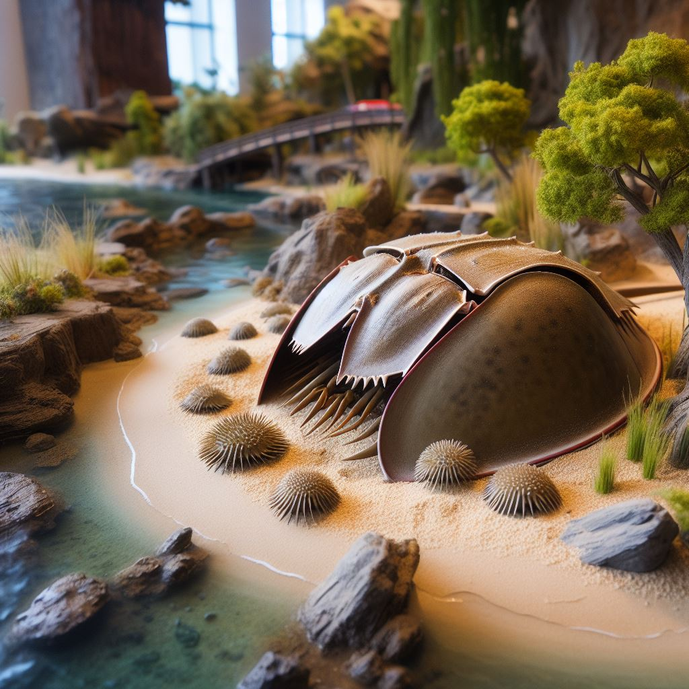
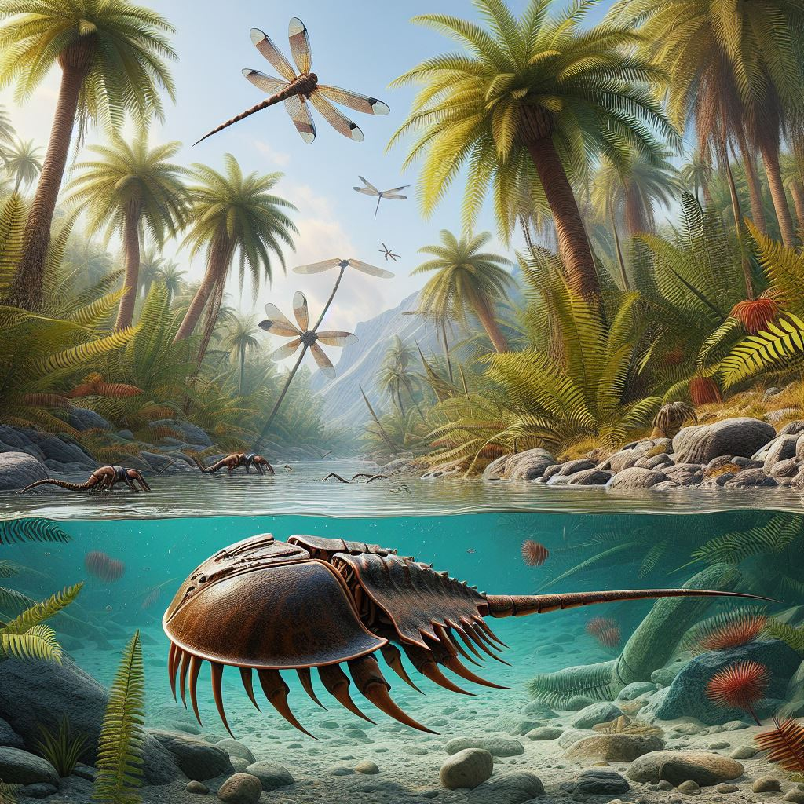

Der Pfeilschwanzkrebs von heute
Unser Zoo ist stolz darauf, einen lebenden Pfeilschwanzkrebs zu präsentieren, ein faszinierendes Tier, das als "lebendes Fossil" bekannt ist. Diese Spezies hat sich in den letzten 230 Millionen Jahren kaum verändert und bietet einen einzigartigen Einblick in die Vergangenheit der marinen Biologie.
Der Pfeilschwanzkrebs aus der Urzeit
Entdecken Sie auch unseren urzeitlichen Pfeilschwanzkrebs, der die Geschichte und Evolution dieser erstaunlichen Kreaturen veranschaulicht. Erfahren Sie mehr über ihre Rolle im Ökosystem und warum der Schutz dieser Art so wichtig ist.
Mehr über Pfeilschwanzkrebse
Pfeilschwanzkrebse sind nicht mit Krebsen verwandt, sondern mit Spinnentieren. Sie leben auf Sand- und Schlickböden und ernähren sich von Krebstieren, Pflanzenteilen und Aas. Bei Gefahr können sie sich schnell in den Sand eingraben. Leider ist der Atlantische Pfeilschwanzkrebs aufgrund der Zerstörung seiner Laichgründe und kommerziellem Fang gefährdet.